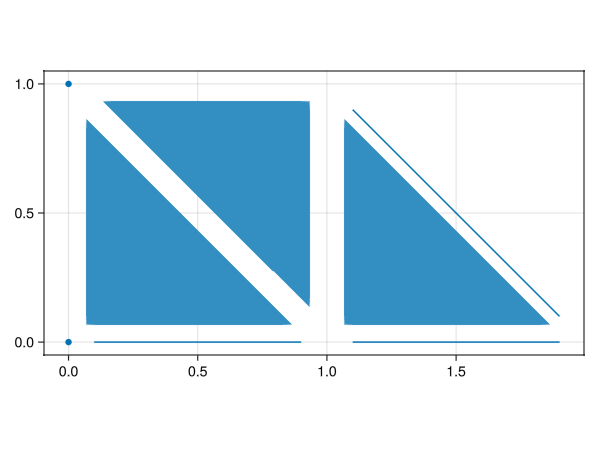

Meshes
A mesh object in GalerkinToolkit contains all geometrical information needed in a finite element (FE) computation. This includes the discretization of computational domains as well as data to impose different types of boundary conditions. It is worth noting that GalerkinToolkit is not a mesh generation library. The mesh API is designed to provide the rich geometrical information needed in FE methods, rather than mesh generation. Meshes are often generated with external tools and then transformed into GalerkinToolkit objects with helper functions such as mesh_from_gmsh.
Definitions
Geometry
Mesh and physical faces: A mesh $M$ in GalerkinToolkit is formally defined as set of physical faces embedded in the Euclidean space $\mathbb{R}^D$, with $D$ often being $D=1,2,3$. A physical face $F\in M$ is defined as the image $\phi(\hat F)$ of a reference face $\hat F$ via a map $\phi: \mathbb{R}^d \rightarrow \mathbb{R}^D$. The reference face $\hat F$ associated with a physical face $F\in M$ is denoted as $\hat F :=\texttt{reference\_face}(F)$.
Number of dimensions, ambient dimensions and co-dimensions: The value $D:=\texttt{num\_ambiend\_dims}(M)$ in the paragraph above is called the number of ambient dimensions of mesh $M$. We call $d := \texttt{num\_dims}(F)$ the number of dimensions of $F$. Note that the number of dimensions $d$ and the number of ambient dimensions $D$ might be different, namely $d\leq D$. The number of co-dimensions is the number of ambient dimensions minus the number of dimensions. In GalerkinToolkit, a mesh might contain faces of different number of dimensions. Thus, we define the number of dimensions of a mesh as the maximum number of dimensions of their faces, $\texttt{num\_dims}(M) := \max_{F\in M} \texttt{num\_dims}(F)$. Note however, that the number of ambient dimensions is the same for all physical faces in a mesh.
Vertices, edges, surfaces, volumes, and $d$-faces: We call $d$-face a face of $d$ dimensions. We call vertices, edges, surfaces, and volumes to faces of 0, 1, 2, and 3 dimensions respectively.
Example
We show a mesh, where the number of ambient dimensions is 3 and the number of dimensions is 2. This mesh contains vertices, edges, and surfaces. We shrink the mesh faces for visualization purposes. Otherwise faces of hider dimensions would hide faces of lower dimensions.
import GalerkinToolkit as GT
import GLMakie as Makie
cells = (4,40)
mesh = GT.moebius_strip(cells;width=0.6)
fig = Makie.Figure()
elevation = 0.24π
azimuth = -0.55π
aspect = :data
ax = Makie.Axis3(fig[1,1];aspect,elevation,azimuth)
shrink = 0.8
shading = Makie.NoShading
GT.makie_surfaces!(mesh;shrink,shading,dim=2)
GT.makie_edges!(mesh;shrink,dim=1)
GT.makie_vertices!(mesh;shrink,dim=0)
Chain: We call chain to a mesh $M$ that contains faces all of the same dimension. We denote with $\texttt{chain}(M,d)\subset M$ the subset of $M$ containing all $d$-faces of $M$.
Reference face: A reference $d$-face $\hat F$ is a $d$-dimensional polytope embedded in the Euclidian space $\mathbb{R}^d$. In particular, $\hat F$ is a segment, polygon, and a polyhedron for $d=1,2,3$ respectively. For $d=0$, we define a reference face $\hat F:=\{v\}$ as a set containing the only point $v\in\mathbb{R}^0$. For $d>0$. We define the boundary $\partial\hat F$ of a reference $d$-face $\hat F$ as the union $\partial\hat F := U_{f\in \hat M_{d-1}} \bar f$, where $\hat M_{d-1}$ is a set of faces of dimension $(d-1)$ and $\bar f$ is the closure of a face $f\in \hat M_{d-1}$. E.g., the boundary of a square is defined as the union of four segments and the boundary of a cube is defined as the union of four squares. Assuming that $\partial\hat F$ is closed, we define the reference face $\hat F$ as the open bounded subset of $\mathbb{R}^d$ with boundary $\partial\hat F$. We denote with $\texttt{chain}(\hat F,d-1)$ the set of faces $\hat M_{d-1}$ defining the boundary of $\hat F$. Note that our definition of mesh has a recursive structure. A physical $d$-face is defined with a reference $d$-face, whose boundary is defined with a set of physical $(d-1)$-faces in embedded in space $\mathbb{R}^d$. Each $(d-1)$-face is defined with a reference $(d-1)$-face, whose boundary is defined with a set of physical $(d-2)$-faces embedded in $\mathbb{R}^{d-1}$. The recursion continues until one reaches reference $0$-faces, which are not defined by their boundary. For a reference face $\hat F$, the number of dimensions $d$ coincides with the number of ambient dimensions, namely $d=\texttt{num\_dims}(\hat F)=\texttt{num\_ambient\_dims}(\hat F)$.
Example
We show the 3-faces of a mesh $M$ (top, left). We also show the reference 3-face of this mesh and the 2-faces defining its boundary (top,right). Then, we repeat this for the reference 2-face (bottom,left), and for the reference 1-face (bottom,right).
import GalerkinToolkit as GT
import GLMakie as Makie
domain = (0,2,0,1,0,2)
cells = (4,2,4)
M = GT.cartesian_mesh(domain,cells)
V3ref = first(GT.reference_spaces(M,3))
M3ref = GT.mesh(V3ref)
V2ref = first(GT.reference_spaces(M3ref,2))
M2ref = GT.mesh(V2ref)
V1ref = first(GT.reference_spaces(M2ref,1))
M1ref = GT.mesh(V1ref)
fig = Makie.Figure()
aspect = :data
ax = Makie.Axis3(fig[1,1];aspect)
Makie.hidespines!(ax)
Makie.hidedecorations!(ax)
shrink = 0.8
GT.makie_surfaces!(ax,M;dim=3,shrink)
ax = Makie.Axis3(fig[1,2];aspect)
Makie.hidespines!(ax)
Makie.hidedecorations!(ax)
GT.makie_surfaces!(ax,M3ref;dim=3,shrink)
GT.makie_surfaces!(ax,M3ref;dim=2,shrink)
aspect = Makie.DataAspect()
axis = (;aspect)
ax, = GT.makie_surfaces(fig[1,3],M2ref;dim=2,shrink,axis)
Makie.hidespines!(ax)
Makie.hidedecorations!(ax)
GT.makie_edges!(M2ref;dim=1,shrink)
ax = Makie.Axis(fig[1,4])
Makie.hidespines!(ax)
Makie.hidedecorations!(ax)
GT.makie_edges!(ax,M1ref;dim=1,shrink)
GT.makie_vertices!(ax,M1ref;dim=0,shrink)
Physical map: The map $\phi$ that transforms a reference face $\hat F$ into a physical one $F$ is called the physical map. It is defined by means of a scalar-valued Lagrangian interpolation space $\hat V$ defined on the reference face $\hat F$, which we denote as $\hat V := \texttt{reference\_space}(F)$. The vector of shape functions and node coordinates of space $\hat V$ are denoted as $\texttt{shape\_functions}(\hat V)$ and $\texttt{node\_coordinates}(\hat V)$ respectively. The length of these vectors is $\texttt{num\_nodes}(\hat V)$. See the Interpolation section for the formal definition of the Lagrangian spaces, as well for the shape functions and node coordinates. The physical map $\phi$ for physical face $F$ is then defined using a vector of physical node coordinates, namely $\texttt{node\_coordinates}(F)$. These physical node coordinates are the prescribed images of the reference node coordinates in $\texttt{node\_coordinates}(\hat V)$. The physical map is defined as follows:
\[\phi(\hat x) := \sum_{n=1}^{N} x^F_n s^{\hat V}_n(\hat x),\]
with $x^F_n := [\texttt{node\_coordinates}(F)]_n$ being the coordinate vector of node $n$ in face $F$, $s^{\hat V}_n := [\texttt{shape\_functions}(\hat V)]_n$ the shape function of node $n$ in space $\hat V$, and $N:=\texttt{num\_nodes}(\hat V)$. The notation $[a]_i$ denotes the $i$-th element of vector $a$.
Integer identifiers (ids)
Face ids: For a given $d$, let $\texttt{num\_faces}(M,d)$ be the number of faces of dimension $d$ in a mesh $M$. We assign a unique integer in $\texttt{faces}(M,d):=\{1,\ldots,\texttt{num\_faces}(M,d)\}$ to each $d$-face in $M$. The integer $\texttt{id}(F)$ assigned to a $d$-face $F\in M$ is called the face id of $F$. Note that face ids are assigned per dimension (two faces of different dimension might have the same id). A face is uniquely identified by its face id $\texttt{id}(F)$ and its dimension $\texttt{num\_dims}(F)$. The face ids are arbitrary as long as they are consecutive integers starting by one.
Node ids: The face-local id of a node in face $F$ is defined as the position of the coordinate of this node in the vector $\texttt{node\_coordinates}(F)$. That is, the node with face-local id $n$ in face $F$ has coordinates $[\texttt{node\_coordinates}(F)]_n$. These coordinates are defined my means of a vector of node coordinates $\texttt{node\_coordinates}(M)$ for the entire mesh $M$ and a vector of integers $\texttt{nodes}(F)$ for face $F\in M$, namely $[\texttt{node\_coordinates}(F)]_n := [\texttt{node\_coordinates}(M)]_m$ with $m=[\texttt{nodes}(F)]_n$. The global id of a node in mesh $M$ is the position of the coordinate of this node in vector $\texttt{node\_coordinates}(M)$. The vector $\texttt{nodes}(F)$ contains the global ids for the nodes in this face, and is indexed by face-local node ids. This is often called the local-to-global (index) map of face $F$ or the connectivity of face $F$. We call them the global node ids (or simply the nodes) of face $F$ since there several types of local-to-global integer maps in GalerkinToolkit. For a given $d$, we collect the node ids of all $d$-faces in a mesh $M$ in a vector called $\texttt{face\_nodes}(M,d)$ such that $[\texttt{face\_nodes}(M,d)]_i = \texttt{nodes}(F)$ for a $d$-face $F\in M$ with $i=\texttt{id}(F)$. In addition, we define the global node ids of mesh $M$ as $\texttt{nodes}(M):=\{1,\ldots,\texttt{num\_nodes}(M)\}$ with $\texttt{num\_nodes}(M)$ being the number of nodes in mesh $M$. i.e., the length of the vector $\texttt{node\_coordinates}(M)$.
Reference ids: For a given $d$, let us consider a vector (or a tuple) $\texttt{reference\_spaces}(M,d)$ containing all the unique reference space for the $d$-faces of a mesh $M$. The reference id of a $d$-face $F\in M$, namely $\texttt{reference\_id}(F)$, is defined as the integer $r$ such that $\texttt{reference\_space}(F) = [\texttt{reference\_spaces}(M,d)]_r$. That is, $r$ is the position of the reference space of face $F$ in $\texttt{reference\_spaces}(M,d)$. The reference ids of all $d$-faces are collected in vector $\texttt{face\_reference\_id}(M,d)$, such that $[\texttt{face\_reference\_id}(M,d)]_i := \texttt{reference\_id}(F)$ for a $d$-face $F\in M$ with $i=\texttt{id}(F)$. The notion of reference id is introduced since different face typologies such as simplixes and hyper-cubes might be contained in the same mesh object. Note also that often all $d$-faces are topologically equivalent. In this case, there is only one reference space for all $d$-faces and their reference id is one.
Mesh meta-data
Face groups: For a given $d$, we call a face group to a subset $G\subset \texttt{faces}(M,d)$ of the face ids of dimension $d$. A mesh is typically endowed with several of these groups to identify particular faces of the mesh for modeling purposes, e.g., to impose boundary conditions, or define position-dependent material properties. Each group is given a group name, which identifies the group. We call $\texttt{group\_names}(M,d)$ the set of group names available in mesh $M$ for faces of dimension $d$. We call $\texttt{group\_faces}(M,d)$ to an associative collection (a Julia Dict in practice), that maps group names to the corresponding subset of face ids $G\subset \texttt{faces}(M,d)$. That is $[\texttt{group\_faces}(M,d)]_n$ is the set of face ids in the group with name $n\in\texttt{group\_names}(M,d)$. Here, $[a]_n$ denotes the value of the associative collection $a$ at key $n$. Face groups are defined per dimension and it is accepted to have the same group name in two or more dimensions. That is, $\texttt{group\_names}(M,d_1)\cap\texttt{group\_names}(M,d_2)$ might be non-empty for two dimensions $d_1\neq d_2$. It is also possible to add new groups to the collection, $[\texttt{group\_faces}(M,d)]_n := G$, as long as the group name $n$ is not already an existing key.
The AbstractMesh interface
A mesh $M$ as defined above is represented in GalerkinToolkit with a mesh object M, whose type is a subtype of AbstractMesh.
Core API
The core API for mesh objects M::AbstractMesh is given below. The definition of these functions is analogous as the definition of the mathematical functions above.
num_dims(M)num_ambient_dims(M)num_codims(M)num_nodes(M)nodes(M)node_coordinates(M)faces(M,d)num_faces(M,d)face_nodes(M,d)face_reference_id(M,d)reference_spaces(M,d)group_faces(M,d)group_names(M,d)normals(M)
Face iteration
Given M::AbstractMesh, function GT.each_face(M,d) creates an iterator object used to traverse all d-faces in mesh M. Using this iterator, face objects can be accessed with the Julia loop syntax.
for F in GT.each_face(M,d)
# Use F
endVariable F represents a d-face in mesh M. One case use the following API on the F object. Most these functions coincide with the mathematical functions presented above. Otherwise, their definition can be found in the corresponding doc-strings.
num_dims(F)num_ambient_dims(F)num_codims(F)nodes(F)num_nodes(F)node_coordinates(F)diameter(F)id(F)reference_id(F)reference_face(F)reference_space(F)
Specializing AbstractMesh
A type that specializes AbstractMesh needs to implement the following methods for an instance M of the new type. The entire AbstractMesh API can be then used in instances of these types.
The Mesh type
The default specialization of AbstractMesh is the type Mesh. It is a data structure able to hold general unstructured meshes.
Creating a general mesh
The general way of creating an instance of the type Mesh is with function create_mesh. This is the lowest-level way of creating a mesh. Other more user-friendly ways of building a mesh are discussed in the Mesh generation section.
Example
In the following example, we generate and visualize a mesh of three first order triangles. Only faces of dimension 2 are present in this example. The arrays for vertices and edges are empty.
#Import dependencies
import GalerkinToolkit as GT
import GLMakie as Makie
import StaticArrays
#Node coordinates
T = StaticArrays.SVector{2,Float64}
node_coordinates = T[(0,0),(1,0),(0,1),(1,1),(2,0)]
#Face nodes
face_nodes_0 = Vector{Int}[]
face_nodes_1 = Vector{Int}[]
face_nodes_2 = [[1,2,3],[2,3,4],[2,4,5]]
face_nodes = [
face_nodes_0,
face_nodes_1,
face_nodes_2]
#Reference spaces
reference_spaces_0 = ()
reference_spaces_1 = ()
order = 1
triangle = GT.unit_simplex(Val(2))
triangle3 = GT.lagrange_space(triangle,order)
reference_spaces_2 = (triangle3,)
reference_spaces = (
reference_spaces_0,
reference_spaces_1,
reference_spaces_2)
#Create mesh
mesh = GT.create_mesh(;
node_coordinates,
face_nodes,
reference_spaces)
#Visualize
axis = (;aspect=Makie.DataAspect())
shading = Makie.NoShading
GT.makie_surfaces(mesh;axis,shading)
GT.makie_edges!(mesh;color=:black)
Example
In this other slightly more complex example, we define a mesh including faces of different dimensions: surfaces, edges and vertices. To be able to see all faces in the visualization, we need to "shrink" them. Otherwise, the surfaces would hide the edges and vertices.
#Import dependencies
import GalerkinToolkit as GT
import GLMakie as Makie
import StaticArrays
#Node coordinates
T = StaticArrays.SVector{2,Float64}
node_coordinates = T[(0,0),(1,0),(0,1),(1,1),(2,0)]
#Face nodes
face_nodes_0 = [[1],[3]]
face_nodes_1 = [[1,2],[2,5],[5,4]]
face_nodes_2 = [[1,2,3],[2,3,4],[2,4,5]]
face_nodes = [
face_nodes_0,
face_nodes_1,
face_nodes_2]
#Reference spaces
order = 1
vertex = GT.unit_simplex(Val(0))
vertex1 = GT.lagrange_space(vertex,order)
segment = GT.unit_simplex(Val(1))
segment2 = GT.lagrange_space(segment,order)
triangle = GT.unit_simplex(Val(2))
triangle3 = GT.lagrange_space(triangle,order)
reference_spaces_0 = (vertex1,)
reference_spaces_1 = (segment2,)
reference_spaces_2 = (triangle3,)
reference_spaces = (
reference_spaces_0,
reference_spaces_1,
reference_spaces_2)
#Create mesh
mesh = GT.create_mesh(;
node_coordinates,
face_nodes,
reference_spaces)
#Visualize
axis = (;aspect=Makie.DataAspect())
shrink = 0.8
shading = Makie.NoShading
GT.makie_surfaces(mesh;axis,shading,shrink)
GT.makie_edges!(mesh;dim=1,shrink)
GT.makie_vertices!(mesh;dim=0)
Creating a general chain
Using function create_mesh might be tedious if all faces are of the same dimension. In this case, we can use the slightly simpler constructor create_chain. It works like create_mesh, but we pass data only for one face dimension.
Example
We create the mesh of the first example, but using create_chain.
#Import dependencies
import GalerkinToolkit as GT
import GLMakie as Makie
import StaticArrays
#Node coordinates
T = StaticArrays.SVector{2,Float64}
node_coordinates = T[(0,0),(1,0),(0,1),(1,1),(2,0)]
#Face nodes
face_nodes = [[1,2,3],[2,3,4],[2,4,5]]
#Reference spaces
order = 1
triangle = GT.unit_simplex(Val(2))
triangle3 = GT.lagrange_space(triangle,order)
reference_spaces = (triangle3,)
#Create mesh
chain = GT.create_chain(;
node_coordinates,
face_nodes,
reference_spaces)
#Visualize
axis = (;aspect=Makie.DataAspect())
shading = Makie.NoShading
GT.makie_surfaces(chain;axis,shading)
GT.makie_edges!(chain;color=:black)
This page was generated using Literate.jl.